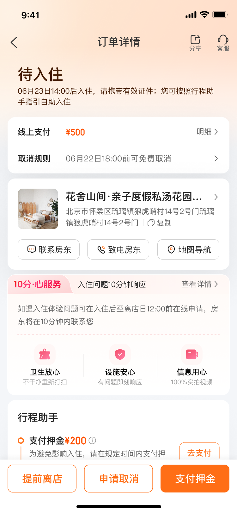
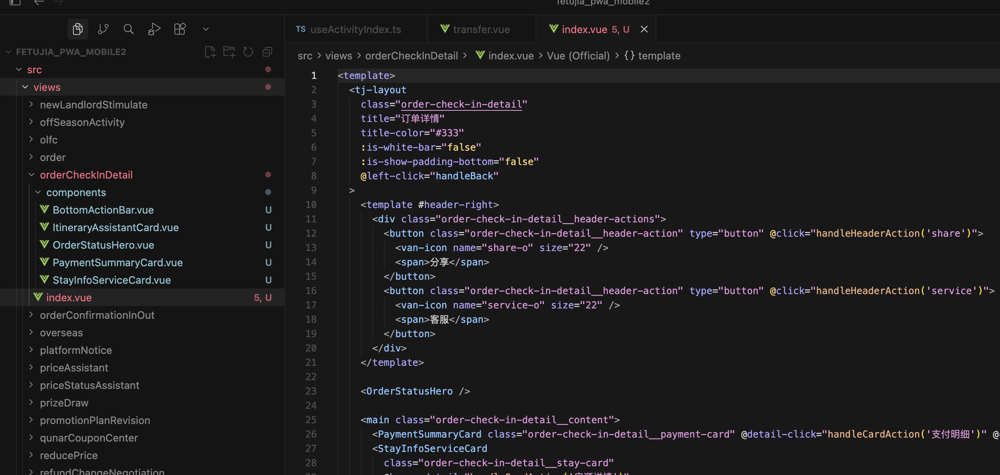
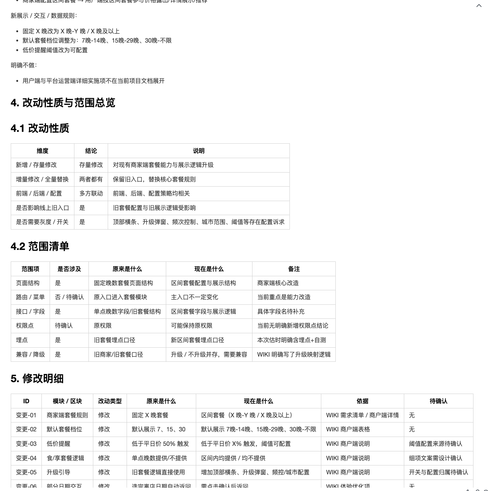
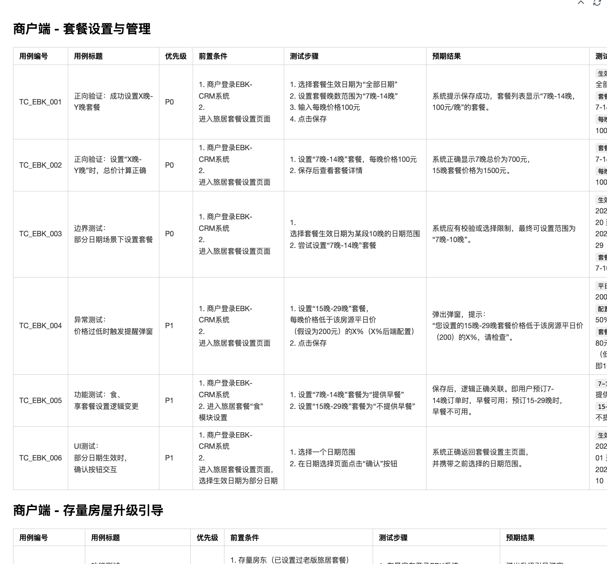
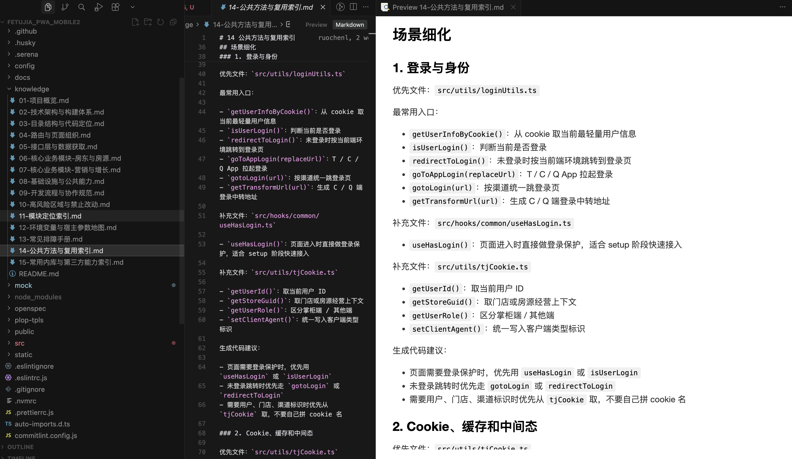

开发前：需求与方案
0.5-1d典型准备耗时
- 需求评审与理解偏差确认 0.5d
- 风险点识别与方案沟通 0.5d
报告主线收敛为已经在推进或已有成果的方向：设计稿还原、代码生成、代码 Review 和运维闭环；其它能力放入未来计划逐步验证。
围绕 Figma 解析、结构重组、私有组件映射和工程规范落地，把设计稿转为可复用代码。
把需求澄清作为代码生成前置环节，通过对话收敛需求，再结合规范、蓝图和知识库生成代码。
基于 diff 做增量分析和影响判断，辅助 Reviewer 更快识别风险并沉淀反馈。
围绕报障、分发、分析、跟进、复盘和知识沉淀，把开发后问题处理做成闭环。
自动分析需求文档，提炼核心信息、识别风险点，完成架构拆分并生成飞书文档，再与产品和后端沟通确认。
判断任务是否可由 AI 自动完成，并生成执行方案。
解析设计稿，生成工程化、可复用的前端代码。
基于需求、规范、checklist 和蓝图生成可维护代码。
当前已用于生成测试用例辅助自测，后续探索日志分析、问题定位和异常归因。
智能分析代码风险与影响，辅助 Review 决策。
正在探索自动化测试方向，重点验证 AI 在用例生成、回归辅助和执行分析中的价值。
沉淀文档与经验，构建团队知识资产。
基于发布与风险分析，自动巡检关键页面。
智能监控异常、关联分析并快速发现问题。
结合日志与链路分析，定位根因并提供修复建议。
未来探索自动执行修复方案、回滚或降低故障影响。

需求理解不清会导致返工、联调反复、测试问题增多，甚至影响上线质量。AI 在这里承担的是需求收敛器和风险雷达。
需求内容混杂，格式不规范，通过AI自动提炼核心需求、拆解功能模块、识别风险点。
通过一问一答逐步确认细节，避免一次性生成大量低价值文档。
本地创建开发分支、生成规范文档，并在线沉淀技术方案，统一产品、后端和测试上下文。
从需求评审结束开始，把信息提炼、风险识别、分支准备、细节澄清和协同沉淀串成一条可复用流程。
需求评审后，通过 @机器人 自动读取需求文档，进入 AI 辅助分析流程。
自动提炼核心需求，本地自动创建开发分支。
拆解功能模块，并识别边界、依赖和潜在风险点，生成规范化文档，降低开工准备成本。
通过一问一答持续澄清需求细节，把不确定点前置到开发之前。
在线沉淀技术文档，统一与产品、后端、测试的协同沟通上下文。
通用 Figma 转代码常常“能运行，但无法真正进入业务工程体系”。这里的关键是空间化重组、私有组件识别、工程规范落地与持续优化。
现状UI 提效 40-50%
批量读取 Figma 节点、页面信息、样式信息和资源信息。
解析节点结构，补齐层级信息，并完成冗余识别、结构压缩与节点重组。
识别团队私有组件，完成可扩展组件匹配与置信度评估。
样式合并优化、响应式转换、单位规范、类型与规范校验。
生成结构代码、样式代码、组件化输出、代码优化。
输出可直接使用的前端代码、组件代码、样式文件与代码片段。
AI 生成后的页面结果，已经具备可交付的页面结构与主视觉还原。

原始设计稿作为 D2C 输入，提供页面布局、视觉样式和组件关系的参考基线。
生成后的代码进一步进入工程化拆分，形成页面入口与多个业务组件的组合结构。


代码生成不是把需求丢给 AI 就结束，而是先完成需求预解析、规范化 PRD、对话澄清和 checklist 确认，再用胶水编程、蓝图和知识库共同约束它，让结果真正可落地。
现状代码生成提效 20%-50%
自动读取需求文档，提炼核心需求、功能模块、字段口径和风险点。
生成符合开发理解的结构化 PRD，同步完成模块、组件、数据流和边界拆分。
围绕待确认项一问一答，收敛业务规则、状态流转和异常场景。
把澄清结论整理成 checklist，先用于人工确认，再作为后续自动化测试输入。
优先复用已有模块，用最少胶水代码组合、封装和适配。
基于澄清后的需求、拆分结果和 checklist 生成工程代码。
生成架构图、数据流、字段溯源，校验 AI 理解是否符合预期。
早期尝试 OpenSpec、Superpower 等方案，但是生成文档量太大，难以阅读，细节也难以覆盖到。
不让 AI 重新造一套系统，而是优先复用已有 SDK、组件、接口和工具函数，只生成少量“连接代码”完成组合、调用、封装和适配。
开发完成后，把代码实现反向整理成可检查的细节视图，例如字段从哪里来、Action 如何流转，帮助开发者确认实现是否符合预期，并为后续排查和复用提供依据。
结构简单、改动范围小、上下文明确，适合直接让 AI 执行。
不需要专门做需求澄清，由开发或产品给出简要描述后即可进入生成流程。
存在一定业务规则和状态变化，需要先做需求澄清，再进入生成代码。
复杂逻辑、复杂交互并存，且产品侧对需求内容梳理不全，容易在开发中不断补细节并引发返工。
在正式生成代码前，先把需求页面结构、状态和关键动作拆出来，作为理解与确认的输入。

把澄清后的关键点收敛成 checklist，用于人工确认，也作为后续自动化测试和生成代码的约束输入。

把项目中的公共方法、场景入口和复用索引整理成结构化 knowledge，作为代码生成与问题定位的长期上下文。


联调阶段最耗时的不是开发本身，而是问题定位、多方沟通、反复确认与修复。目前已使用 AI 生成测试用例用于自测，日志分析和问题定位仍处于探索方向。
传统 CR 受 Reviewer 精力、上下文完整度和全局影响分析能力限制。AI CR 平台的目标是在上线前识别更深层风险。
现状耗时 20min→5min 采纳率65%
跟机器人对话，触发 CR 流程。
识别变更范围，生成初步分析报告。
Reviewer 查看 AI 报告，结合代码进行 Review。
确认问题，提出修复建议，标记误报或忽略说明。
生成 CR 结论、风险等级与评价。
输出通过、需修改或需人工确认的结论，进入后续开发处理或测试准备。

这一阶段目前还在探索自动化测试方向，尚未真正开始在流程中使用。当前重点是判断 AI 能在哪些测试工作上形成稳定收益。
发布之后研发工作并没有结束。线上阶段更关注报障闭环、问题定位、自动巡检、经验沉淀与长期可维护性。飞书 OpenClaw 方案里的测算主要可以支撑这一阶段。

下一阶段重点不是简单扩大 AI 使用范围，而是让每个环节都有清晰边界、可验证指标和持续反馈机制。
AI 在前端领域的价值不是替代单点工作，而是把研发流程中的经验、上下文和反馈机制产品化。
前端研发已经覆盖需求理解、方案设计、开发联调、质量保障、发布运维和线上问题处理。
通过规范、知识库、蓝图、组件映射与反馈闭环，让生成结果真正进入业务工程。
数据反馈持续优化 AI 能力，形成越用越智能、越用越高效的正循环。
以下能力均来自项目 /Users/qitmac001753/code/tujia/fetujia-ai-assets2/。这里按资产形态拆成两个清单：一类是当前 MCP 相关包，一类是已经沉淀的 skill，方便在汇报里直接说明现有能力底座。
当前 `packages` 目录下已经沉淀的 4 个 MCP 相关包：
当前已经沉淀的 skill：